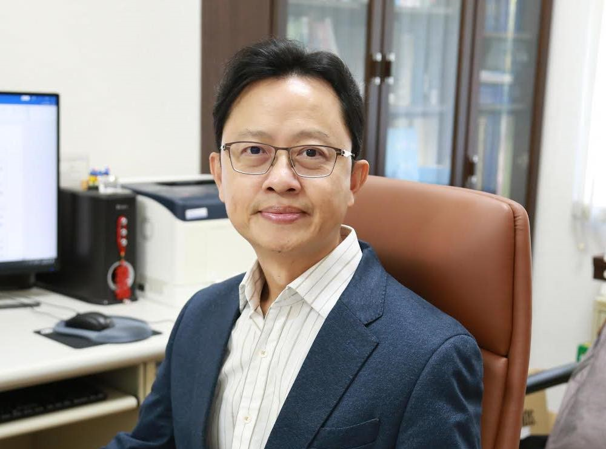

Education
- Ph.D. in Industrial Engineering & Engineering Management (Ergonomics), National Tsing Hua University (2000.12)
- M.S. in Statistics, National Central University (1997.6)
- Visiting Professor, Dept. of Systems Design Engineering, University of Waterloo, Ontario, CANADA (2012–2013)
Research Interests & Advising Approach
- Human-computer interaction design, social commerce, big data applications, human-AI collaboration
- Methods and applications of human-centered design
- Developing practice-oriented research topics through industry-academia collaboration
- Training students to write academic and applied grant proposals, publish at major domestic and international conferences, write English-language master's theses, and build strong industry relationships
PRINCIPAL INVESTIGATOR
Chris, Kuo-Wei Su
National Kaohsiung University of Science and Technology Dept. of Information Management Distinguished Professor · Lab. for Human-Computer Interaction and Smart Technology
Dr. Kuo-Wei (Chris) Su is currently a Distinguished Professor in the Department of Information Management at National Kaohsiung University of Science and Technology (NKUST), Taiwan. He is also a President in Ergonomics Society of Taiwan (EST), a Vice-President, Asian Council on Ergonomics and Design (ACED), an Executive Director in Chinese Institute of Industrial Engineers (CIIE), and the former convener of Human Factors and Design Program in National Science and Technology Council (NSTC). He is now for serving a convener of Healthcare Ergonomics Program in NSTC’s Healthcare Systems Consortium (HSC). Prof. Su received his Ph.D. degree in Industrial Engineering and Engineering Management with Outstanding Ph.D. Student Award from National Tsing Hua University (NTHU) in 2000, the M.S. degree in Statistics from National Central University (NCU) in 1997. He worked for National Kaohsiung First of Science and Technology (NKFUST) before he joined NKUST. He was an Associate Vice President for Academic Affairs and a Director for Library and Information Center at NKFUST in 2013 and 2015, respectively. He was a Visiting Professor in Dept. of Systems Design Engineering, U. of Waterloo, Ontario, CANADA from 2012 to 2013 (sponsored by Ministry of Science and Technology). Dr. Su has received the Annual Youth Management Award from the Kaohsiung City Branch of the Chinese Management Association in 2014. He is also serving as one of editorial board members for various international journals (Such as Journal of Ambient Intelligence and Humanized Computing, Human Factors and Ergonomics in Manufacturing & Service Industries, and Safety Science etc.). His research interests include Human-Computer Interaction, Healthcare and Ergonomics, User Interface, User Experience, Industrial Engineering and Management, Electronic Commerce, Applied Statistics and Data Analysis.
Current & Major Past Positions (Full List)
- Vice-President, Asian Council on Ergonomics and Design
- President, Ergonomics Society of Taiwan
- Executive Director, Chinese Institute of Industrial Engineers
- Standing Director, Ergonomics Society of Taiwan
- Review Committee Member, MOST Industrial Engineering Industry-Academia Projects
- Planning & Review Committee Member, MOE Teaching Practice Research Program (Business Management)
- Planning & On-Site Review Committee Member, Joint Commission of Taiwan National Quality Award — Smart Healthcare
- Planning Committee Member, MOST Industrial Engineering Frontier Issues & Emerging Technologies
- Director, Contextual Intelligence Society of Taiwan
- Convener, MOST Human Factors & Design Program Planning (2020–2022)
- Review Committee Member, MOST Human Factors & Design Program Projects
- Preliminary Review Committee Member, MOST Human Factors & Design Undergraduate Projects
- Deputy Review Committee Member, 27th–29th Taiwan Excellence Award (Quality Category)
- Convener, Social Network Committee, Chinese Institute of Industrial Engineers
- Editor-in-Chief, Journal of Ergonomics Study, Ergonomics Society of Taiwan
- Chair, Dept. of Information Management, National Kaohsiung First University of Science and Technology (NKFUST)
- Director, Library and Information Center, NKFUST
- Associate Vice President for Academic Affairs / Director, Teaching and Learning Center, NKFUST
- Director, E-Business Center, NKFUST
- Director, New Venture Development Center, NKFUST
- Director, Technology Cooperation Office and Continuing Education Center, Takming University of Science and Technology
Journal Publications (Reviewer / Author)
- Virtual Reality
- Journal of Ambient Intelligence and Humanized Computing
- Health Care Management Science
- Journal of Industrial and Production Engineering
- Journal of the Chinese Institute of Industrial Engineers
- Human Factors and Ergonomics in Manufacturing & Service Industries
- Contemporary Management Research
- International Journal of Applied Science and Engineering
- International Journal of Engineering Business Management
- Knowledge-Based Systems
- Safety Science
- International Journal of Computers and Applications
- Journal of Ergonomics Study (Taiwan)
- I-SHOU University Journal of Humanities and Social Sciences
- Electronic Commerce Studies
- Journal of Electronic Commerce
- Journal of Information Management
Research Grants (Full History as PI / Advisor)
- AY108 (2019.08–2020.07): Establishing and Verifying a Blockchain-Based Lodging Platform Using an HCI Perspective and Integrated Technology Acceptance Model (I). MOST Grant, PI · MOST 108-2221-E-992-005
- AY107 (2018.09–2019.05): Collection and Monitoring of Physiological and Cognitive Signals During Personal Combat. Contextual Intelligence Society of Taiwan, PI
- AY107 (2018.08–2019.07): Applying the SEM-CPU Method to Chatbots in Social Commerce. MOST Grant, PI · MOST 107-2221-E-992-063
- AY106 (2018.07–2019.02): Building and Testing a Smart Community Loyalty & Rewards System Using GOMS and QUIS. MOST Undergraduate Grant, Advisor · MOST 107-2813-C-992-016-E
- AY106 (2018.05–2018.10): Building a Conversational Chatbot for Smart Travel from an HRI Perspective. Industry-Academia Collaboration Grant (SME Tech Outreach), PI
- AY106 (2018.05–2018.10): Introducing HCI Techniques to Mobile Gaming. Industry-Academia Collaboration Grant (SME Tech Outreach), PI
- AY106 (2017.08–2018.07): Exploring User Interface and Experience for VR/AR in E-Commerce. MOST Grant, PI · MOST 106-2221-E-327-022
- 2017 (2017.01–2017.12.31): 2017 Industry-Academia Collaboration Information Service Center Operations Project. Ministry of Education, PI
- AY105 (2017.01–2017.02): Preliminary Study on Web Push Technology Combining Big Data with Travel Information. PI, Zhihuang Network Technology Co., Ltd.
- AY105 (2016.08–2017.07): Exploring Social Big Data Visualization from a User Interface and Experience Perspective. MOST Grant, PI · MOST 105-2221-E-327-026
- AY105 (2016.07–2017.02): Developing a Real-Time Urban Parking System Based on HCI Behavioral Models. MOST Undergraduate Grant, Advisor · MOST 105-2815-C-327-009-E
- 2016 (2016.02–2017.12.31): 2016 Industry-Academia Collaboration Information Service Center Operations Project. Ministry of Education, PI
- 2015 (2015.11–2016.10): Smart One-Cloud-Multi-Screen Advertising Display from a User Perspective. MOST Industry-Academia Collaboration Grant, PI
- AY103 (2015.07–2016.02): A Stress-Management Gamification App Using an EEG Headset. MOST Undergraduate Grant, Advisor · MOST 104CFA2700015
- AY104 (2015.08–2016.07): Exploring and Establishing Mobile Game Interface Design Guidelines from a User Perspective (II). MOST Grant, PI · MOST 104-2221-E-327-013
- AY103 (2014.08–2015.07): Exploring and Establishing Mobile Game Interface Design Guidelines from a User Perspective (I). MOST Grant, PI · MOST 103-2221-E-327-037
- AY102 (2014.06–2014.12): Enhancing Customer Relationship Management and Online Marketing Development. Co-PI, Sunfar Computer Co., Ltd.
- AY102 (2013.08–2014.07): Building a Mainland Tourist Guide System and Examining Tourist Behavioral Intention with UTAUT (II). NSC Grant, PI · NSC 102-2221-E-327-028
- 2013 (2013.07.01–2014.02.28): Eye-Tracking Usability Testing of a Mainland Tourist Guide System. NSC Undergraduate Grant, Advisor · NT$47,000
- AY101 (2012.12–2013.01): Student Achievement and Development Survey. PI (commissioned by the Dept. of Information Management, NKFUST) · NT$100,000
- AY101 (2012.07–2012.08): Research on Mobile Social App Development. PI, Zhihuang Network Technology Co., Ltd.
- AY101 (2012.08–2013.07): Building a Mainland Tourist Guide Learning System and Examining Tourist Behavioral Intention with UTAUT (I). NSC Grant, PI · NSC 101-2221-E-327-010
- 2012 (2012.08–2013.07): NSC-Sponsored Short-Term Overseas Research for Scientific and Technical Personnel. Dept. of Systems Design Engineering, University of Waterloo, Canada
- 2012 (2012.01–2012.12): Featured Development Project. PI, National Kaohsiung First University of Science and Technology (NKFUST)
- AY100 (2011.10–2012.03): Location-Based Service (LBS) Tour-Guide App for Foreign Visitors in Kaohsiung. PI, Zhihuang Network Technology Co., Ltd.
- AY100 (2011.10–2011.12): Usability Testing and Development Evaluation of the LBS Tour-Guide App. PI, Zhihuang Network Technology Co., Ltd.
- AY100 (2011.08–2012.07): Building and Evaluating an Ontology-Based Air Traffic Controller Knowledge Learning System (II). NSC Grant, PI · NSC 100-2221-E-327-010
- AY100 (2011.07–2011.12): Introducing and Implementing HCI Techniques for a Cloud POS Platform. 2011 Industry-Academia Collaboration Grant (SME Tech Outreach), PI · Fongsin Computer Co., Ltd.
- AY100 (2011.08–2011.09): Preliminary Study for the LBS Tour-Guide App. PI, Zhihuang Network Technology Co., Ltd.
- AY99–100 (2011.04–2011.09): Evaluating Interactive Video-Based VR Applications from an Ergonomics Perspective. 2011 SME Technical Assistance Program, PI · Ministry of Economic Affairs · Farwin Technology Co., Ltd.
- AY99 (2011.01–2011.03): Integrated Development of a Photo-Recognition Technology Platform. PI, Farwin Technology Co., Ltd.
- AY99 (2010.07–2010.12): SME Technology Outreach Program — Introducing and Implementing Mobile HCI Technology. Recipient lab, academia-industry collaboration
- AY99 (2010.08–2011.07): Building and Evaluating an Ontology-Based Air Traffic Controller Knowledge Learning System (I) (multi-year). NSC Grant, PI
- AY99 (2010.07–2010.12): Feasibility Study on a Dutch Auction System for the Hotel Industry. PI, Zhihuang Network Technology Co., Ltd.
- 2010 (2010.07.01–2011.02.28): Building a Beverage-Industry POS System Using the XDNA Platform. NSC Undergraduate Grant, Advisor · NT$47,000
- 2010 (2010.07.01–2011.02.28): Building a Mobile Online Hotel Booking System Using Interface Design Principles. NSC Undergraduate Grant, Advisor · NT$47,000
- 2010 (2010.06–2010.10): Effectiveness Evaluation and Policy Recommendations for the "Program for Developing World Class Universities and Research Centers". Researcher, Research, Development and Evaluation Commission, Executive Yuan
- AY98 (2010.01–2010.06): Human-Factors System Usability Design for an Integrated Financial/Insurance Planning Advisory Platform. PI, Zhimeng Technology Co., Ltd.
- AY98 (2009.12–2010.02): Application and Introduction of HCI Interface Technology. PI, Zhihuang Network Technology Co., Ltd.
- AY98 (2009.10–2010.03): NTUST "Short-Term Domestic Scholar Visit" Program II. Visiting scholar
- AY98–99 (2009.02–2011.01): MOE RFID Technology and Application Talent Cultivation Pilot Program (98–99 RFID Curriculum). PI
- AY97–98 (2009.01–2009.12): Usability Evaluation of the moRich Mobile Financial Advisory System. 2009 Industry Park Grant, PI
- AY97 (2008.02–2008.07): Student Achievement and Development Survey. PI (commissioned by the Dept. of Information Management, NKFUST) · NT$100,000
- AY97 (2008.08–2010.07): Communication and Presentation of Static and Dynamic Flight-Safety Information — Subproject 4: Ontology-Based Flight Information E-Learning and Knowledge System (multi-year). NSC Grant, PI (inter-university project: NTHU / CYCU / USC)
- AY97 (2008.04–2008.12): Southern Traditional Industry Technology Outreach Program. Recipient lab, academia-industry collaboration
- AY96 (2007.02–2007.07): NTUST "Short-Term Domestic Scholar Visit" Program. Visiting scholar
- AY97 (2008.07.01–2009.02.28): Building an Ergonomics-Based Mobile Equipment Inspection System. NSC Undergraduate Grant, PI · NT$47,000
- AY96 (2007.11.01–2008.10.31): Promoting Information Dissemination via Interface Design and SOA — E-Government Document Exchange System Case Study. NSC Small-Business-University Grant, PI · Total NT$468,174
- AY96 (2007.07.01–2008.02.28): Building a Mobile Nursing Information System. NSC Undergraduate Grant, PI · NT$47,000
- AY95 (2006.08.01–2007.07.31): HCI Design for Building a Mobile Learning System. NSC Grant, PI · NT$500,000
- AY95 (2006.07.01–2007.02.27): First Supplementary Teaching Material Grant, NKFUST — Building a Mobile Learning System for Statistics Course Support. PI · NT$30,000
- AY95 (2006.07.01–2007.02.28): Building a Mobile Learning System for English Instruction. NSC Undergraduate Grant, PI · NT$47,000
- AY95 (2006.07.01–2007.02.28): Building a Location-Based Mobile Positioning Service — Tourism Guide Case Study. NSC Undergraduate Grant, PI · NT$47,000
- AY94/5 (2006.05.01–2007.04.30): Building a Successfully Operating Knowledge Management System from an Ergonomics Perspective. NSC Small-Business-University Grant, PI · Total NT$523,554
- AY94 (2006.04.15–2006.06.15): NKFUST New Venture R&D Center Grant — Promoting Graduate Student Participation in Industry-Academia Collaboration. Advisor · NT$10,000
- AY94 (2006.01.01–2006.12.31): NKFUST R&D Office Grant — Building a Mobile Course-Selection Satisfaction System Using Fuzzy Semantic Analysis. PI · NT$40,000
- AY94 (2005.08.01–2006.07.31): Small Interface Design Principles for Smart Mobile Devices — Emergency Response Control Case. NSC Grant, PI · Total NT$484,000
- AY93: HCI Research in Mobile Commerce — Online Bookstore Case (Liao Yu-Yun). NSC Undergraduate Capstone Grant, Advisor · NT$47,000
- AY93 (2005.05–2005.07): Student Achievement and Development Survey. PI (commissioned by the Dept. of Information Management, NKFUST) · NT$100,000
- AY94 (2005.05.01–2006.04.30): Development of LBS Services in Mobile Phone Interface Design. NSC Small-Business-University Grant, PI · Total NT$528,554
- AY94 (2005.05.01–2006.04.30): Applying Technology Acceptance Theory to Support IT Product Marketing — Life Insurance Industry Case. NSC Small-Business-University Grant, Co-PI · Total NT$451,000
- 2004 (2004.08.01–2005.07.31): Applying Knowledge Structures to Fault-Diagnosis Assistance Systems — Motorcycle Repair Shop Case. NSC Grant, PI · Total NT$460,500
- 2004 (2004.07.15–2004.11.15): 2004 Satisfaction Survey on Environmental Complaint Handling and Public Applications Across Environmental Agencies. PI, Environmental Protection Administration, Executive Yuan · Total NT$620,000
- 2004 (2004.02.01–2004.10.31): 2004 Environmental Policy Opinion Survey. PI, Environmental Protection Administration, Executive Yuan · Total NT$848,000
- 2002 (2002.08.01–2003.07.31): Knowledge Structures in Expert System Interface Design. NSC Grant, PI · Grant No. 91-2213-E-147-001 · Total NT$469,900
- 2001 (2001.08.01–2002.07.31): User-Cognition-Oriented Expert System Interface Development. NSC Grant, PI · Grant No. 90-2218-E-147-001 · Total NT$323,400
- —: Reducing Human Error in Logistics Unit Maintenance: Recovery Management Mechanisms (II). NSC Grant, Research Assistant
- —: Reducing Human Error in Logistics Unit Maintenance: Recovery Management Mechanisms (I). NSC Grant, Research Assistant
- —: Rationality of Nuclear Power Plant Operating Procedures — Applying Procedural Control Decision Models. NSC Grant, Research Assistant
- —: Cost-Benefit Evaluation of a Low-Emission Large-Bus Demonstration Program. Commissioned by the Environmental Protection Administration, Executive Yuan, Research Assistant
- —: Standardized Data-Access Interface Research Based on STEP (ISO-10303) for Product Data Management Systems. NSC Grant, Research Assistant
ABOUT THE LAB
Understanding People and Systems Through Ergonomics
The lab is part of the Department of Information Management at National Kaohsiung University of Science and Technology. Using human-centered design as our shared methodology, we train students to build a complete research skill set — from observing users, to quantifying behavior, to validating interaction design.
Research Philosophy
Research isn't just building models — it's understanding people
Every project starts from what actually happens when people use a system: how they look, where they hesitate, where they give up on a task. Before graduating, we want every student to have completed a full user-research cycle firsthand — observe, quantify, design, validate.
Research Focus
Four Research Directions
The four directions are independent yet mutually reinforcing: interface research provides the methodology, commerce and data analytics provide the application domains, and AI collaboration extends the work into the future.
Human-Computer Interaction Design
Studying the interaction relationship between systems and users, including interface usability evaluation, interaction flow design, and hands-on training in user research methods such as eye tracking.
Social Commerce
Combining e-commerce, marketing, and statistical analysis to study consumer behavior, trust-building, and purchase decisions on social platforms.
Big Data Applications
Starting from the variety, velocity, and volume of data, learning how to turn massive datasets into business decision value, and validating hypotheses with statistics and machine learning.
Human-AI Collaboration
Exploring modes of human-machine collaborative work that respond to low-volume, high-variety, flexible production and service needs, with attention to risk and trust in human-AI collaboration.
LAB EQUIPMENT
Lab Equipment Overview & Features
Equipment is organized around three research stages — observing users, quantifying behavior, and validating interaction design. Click a card to see full details.